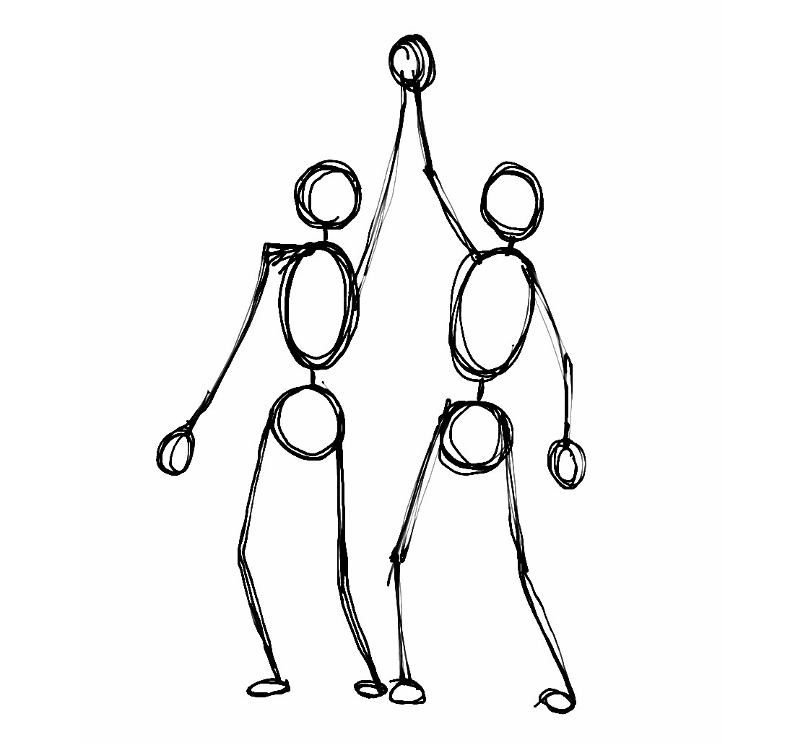

THE THOUGHTS
Let's Just Start with Peru
But we'll move on later
So you've seen the pictures, or you can see the pictures if you so do desire, of the places I ventured to this past summer, but what do they mean? What were they actually like? Thumbs up? Thumbs down? A neutral thumb? Well, if you trust my opinion even in the slightest bit, then stick around because I'll give you good, juicy details on all the places. We're going to hone in on that country down south that's pretty substantial in size. The name starts with a "p" and ends in a "u"...don't know if you've heard of it, but like it's a pretty big deal on a global scale. It's called Peru, and it's a magical place with lots of little magical places scattered throughout. My goal here is to tell you a little more about these places, and if it's a little too much, I think the pictures should suffice!
Laguna Humantay
Not the tallest lake in the world, but pretty dang close. June 16, 2018

Adventure número uno. The big kahuna. Meg and I were lucky enough to have a host mom who planned literally all of our trips for us since our host fam had a little tourism agency business on the side. No big deal. So we had no idea what we were getting into, but we hopped on that bus at 6 am and didn’t ask any questions. And thus commences the dawn of my love for long bus rides…ok correction…for long bus rides rife with natural scenery. I’m talking snow-capped mountain ranges, cliffs that you almost plummet down at every turn, some pretty beautiful rivers, the whole shebang. I don’t ask for much ok, just to be blown away by Peruvian or Peruvian-like topography. This is my new standard for bus rides, so the bar is set very high now, America. If we have to take a detour up a mountain to get the same effect, so be it. Anyways, yes, this first bus ride was glorious because I had a whole newish playlist of music that was not yet too painfully repetitive, and even though I had homework to do, there is an 80% chance I would get carsick in some way if I did it, so this leaves me with only one option: not to do it. My only task was to sit in my rather comfortable seat, listen to music, and stare at the window into just pure beauty really. The nasal part, however, was not top notch and had a little bleed because the altitude was not kind. BUT a lovely Brazilian man gave me some toilet paper and some advice (albeit incorrect advice) on how to stop a bloody nose. So I held my head back, getting some good, bloody swallows every now and then (the moral of this story, folks, is to not hold your head back in a bloody nose scenario) until we arrived at destination #1. Altitude was not kind to our lungs or our legs either, so we opted to ride horses to the lake instead of walk. And finally, we made it to Laguna Humantay, and it was WELL worth the wait. Imagine a mirror, but like a super big mirror. Plop some snow and rocks around that mirror, and boom, you’ve got Laguna Humantay. Words do an injustice to a primarily visual beauty, so I’ll let the pictures do the talking….and then I’ll hop in to do some more talking. Basically this is a 10/10 recommended visit and a great trip to take even if you just arrived in Peru. The hike is not the most excruciating (but this could be the horse ride talking?), which is an essential thing to consider since it is WAY harder to get all the oxygen you need at these much higher altitudes. Also, there is no need for a tour guide or anything like that, so all you need to pay for is the bus ride essentially.
Machu Picchu
Worth it. Just worth it. June 23, 2018


Dont miss! It is everything you would expect from one of the seven wonders of the world. The journey there was a little rocky (pun most definitely intended), but getting to be in a place you didn’t think would get to go to until you were at least 40 is pretty surreal. I honestly have still not wrapped my head around physically being there; It feels more like I put on those virtual reality glasses, but the grueling hike to the ruins and back down to Aguas Calientes brings the trip back down to reality. Not surprisingly, I think that this is one of the most anticipated trips for any traveler to Peru for any reason. You don’t make the trip down to Peru without seeing Machu Picchu, you just don’t. As far as the planning went, it was more on the nonexistent side since, again, we were so lucky to have our host mom arrange all of the little details. However, if we didn’t have this perk, I would have made a pretty big effort to research all of the different companies and options because this is where rip offs thrive. There are extensive factors to consider when going to Machu Picchu that really comes down to how much physical effort you want to put into the trek. For instance, the super extreme option that includes a four-day hike along the Inca trail is somehow appealing to people who like the feeling of constant death up a mountain for long periods of time. However, my amigas and I opted for the middle-of-the-road option where we did not take the train to Machu Picchu town nor the bus up the mountain but rather chose to torture our legs instead. I cannot apologize enough to those poor babies; they took quite the beating. But, if you are really not feeling a total of seven hours of hiking, there’s an app for that! If you so do choose, you can watch the suffering hikers from the convenience of an air-conditioned train and bus. This is the option with minimal exercise required, and if money was out of the question, I think we would have taken advantage of this opportunity.
Fast-forwarding to post-climb time…Ok, the actual ruins at the top were very surreal. I would love to go again just to fully soak it all in because we only got to walk around Machu Picchu for about an hour or so @mom @dad #please. In the summer, it is rather busy, so tourists are hustling and bustling around, but it is ultimately the best time to go because you can bet on the majority of the days being sunny. The rainy season happens during their summer (so from September to March or something like that?). Also, in the summer, they only sell half-day tickets to Machu Picchu, and there is no way around that rule, so you get around five hours max to wander and roam about, not a whole day, which is kind of a bummer! Oh! They also can stamp your passport for free with a Machu Picchu stamp, and I cherish that stamp more than any other. Overall, just an extremely cool place that I feel so completely grateful to have gone to.
Finally, I want to say some words about Machu Picchu town, the mini city that tourists stay at before the hour-long hike to the ruins. It is truly an underrated area because there is an abundance of restaurants with delicious food and markets and music complete with a charming little river running through it. I think it was so cool to my friends and I because we had no idea it was there and how developed it was. There are also plenty of stray dogs to find and kidnap in your hotel room and convince to follow you all the way up to Machu Picchu. What? Did you hear something? Kidnap? No. Must just be you. Hm. Strange.
Rainbow Mountain
Yes.Rainbow.Mountain. July 8, 2018


Oh, you thought you missed oxygen at Machu Picchu? Cute, Paige, cute. The lack of this precious gas on this hike can and did actual lead to some delusion! Ok, so a little background about Rainbow Mountain: It is located south of Cusco and is one of the more underrated Peruvian mountains because Machu Picchu masks most of the other landmarks for the most part in its popularity. Anyways, it is about 16,000 feet in altitude, which is 6,000 feet above where you can use electronic devices on a plane. A.k.a., it’s up there. In fact, they (the Peruvians and really anyone who knows about altitude change) recommend that you wait around two weeks upon arriving to Peru to take on this trek because your body has to adjust to the altitude before you exhaust it to its limits. Seriously, in our group’s little pep talk before the hike, they warned us not to sit down as we would probably not be able to get up. They also gave us coca leaves, which as you can deduce, is cocaine’s close relative that helps relieve the body’s stress and disorientation from the high altitude. How it does that exactly? I am not sure, but I trust it. We shall speed past this hike as it really only consisted of incohesive sentences and constant usage Meg’s inhaler and the questioning of our decision to do this whole thing.
*fast forwarding to top of mountain* Alright, we have reached the top of the mountain, and wow, the views give Machu Picchu a run for its money. It looked as if someone had painted stripes on this one mountain amongst a whole slew of bland, brown ones. Breathtaking. Literally. I think we all could have sat at the top of this mountain the entire day. If you read any article or blog advising you not to make the hike up this mountain, guard your eyes from that trash immediately because it tells lies. You just feel so proud of yourself for 1) not falling, 2) not dying, and 3) not throwing up that you forget the hours it took for you to make it to this point and simply enjoy being there. Oh, and there is this huge mountain facing you that defies all other mountains in its color, composition, and striped pattern that leaves you with only an exhausted but awestruck “wow.” Again, a guide isn’t really necessary on this trip, but a program with a comfortable bus and ample food is highly highly highly recommended.
The Stuff Doer
Hi. Hello. Greetings. Many thanks for stopping by. Paige is my name, and procrastinating is my game. You see, this whole website is supposed to be a place to share all these pictures I took and stuff I worte in Peru, yes, the Peru that I went to this past summer that I am just now mentioning in December. But hey! I have never been more true to the motto better late than never than right now, and I promised myself and lots of other people that I would finish this, so here it is in all its tardy glory. If you find some bugs or glitches in it, my apologies, but it's because the website was made with 100% html and css, courtesy of computer science (a.k.a. the love of my life!!!!! #lolno) Anywho, I hope you enjoy what I've got!
Categories
-
 Some Places
Some Places
Geography is Cool -
 Some Food
Some Food
The Love of My Life -

Some People
Lots of Keepers -
 Some Work
Some Work
Volunteering and Such -
 Some Other Thoughts
Some Other Thoughts
Similar to the Mystery Flavor Dum-Dum